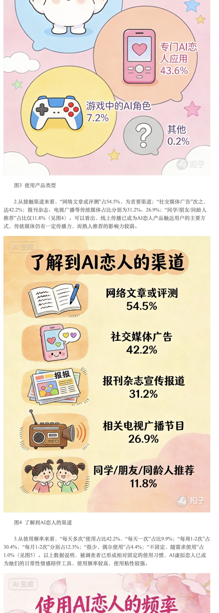
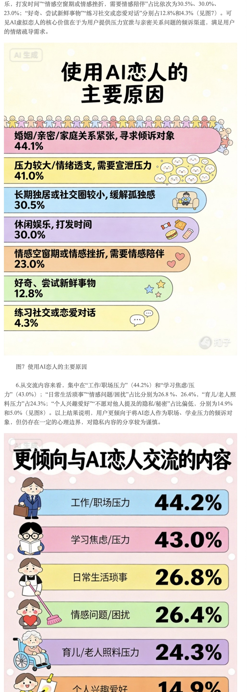
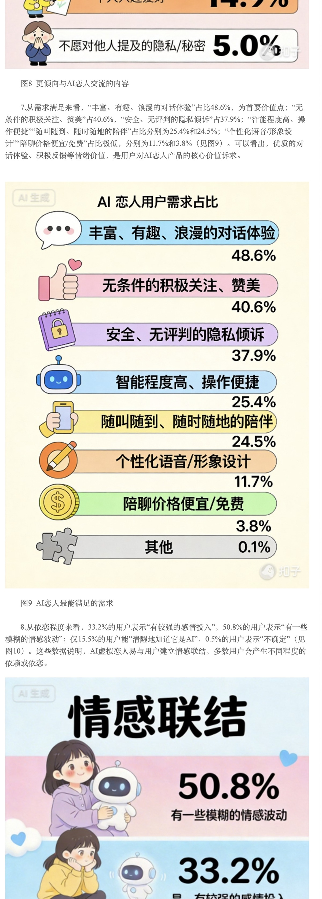
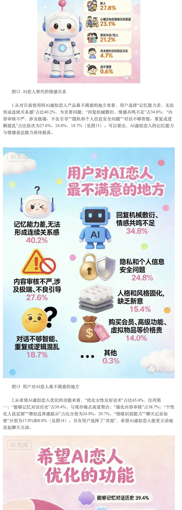
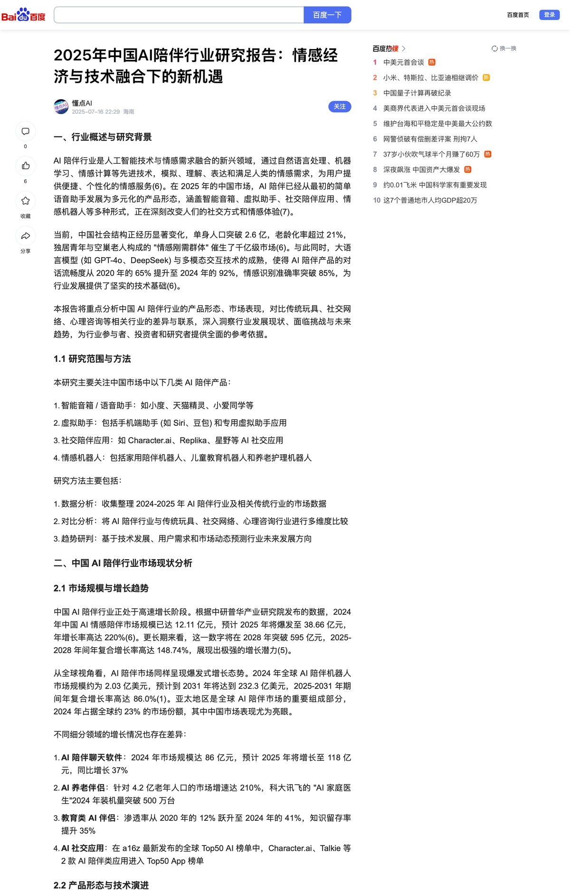
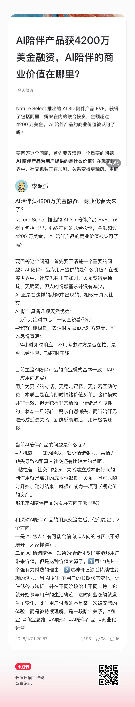

AI 恋人接触渠道与使用频率
用于支撑社媒/内容渠道和高频使用行为的趋势判断。
来源：桌面/ 市场规模:商业化/20260514-125356.jpg 裁切聚焦市场机会、竞品商业化、用户付费态度、会员权益和后续数据验证。
这次已读取桌面“市场规模/商业化”文件夹。现有资料仍不足以严谨计算 AI 陪伴赛道准确市场规模，但已经能支撑趋势判断：AI 恋人/陪伴具备高频使用、情绪需求、关系替代想象和付费可能；商业化成败取决于是否把付费设计成“关系增强”，而不是把基础陪伴拆成消耗。
以下来自用户提供的“20260514-125356.jpg”长图截图，作为资料样本引用，不等同于全行业官方统计。
| 维度 | 截图中可识别数据 | 判断 |
|---|---|---|
| 婚恋状态 | 未婚无伴侣 37.6%，未婚有伴侣 33.9%，未婚合计约 71.7%。 | AI 恋人/陪伴首先承接未婚人群的情感空档和关系想象。 |
| 使用产品类型 | 通用 AI 聊天机器人 48.3%，专门 AI 恋人 app 43.6%。 | 专门陪伴 app 有空间，但要证明比通用 AI 更懂关系。 |
| 接触渠道 | 线上文章/测评 54.5%，社交媒体广告 42.2%。 | 小红书、测评、真实体验内容适合作为种草入口。 |
| 使用频率 | 每日多次 42.2%，每日一次 9.9%，每周 1-2 次 30.4%。 | 陪伴产品有高频入口潜力。 |
| 单次互动时长 | 15-30 分钟 49.1%，30-60 分钟 32.6%。 | 对话时长足以带来关系沉浸，也会带来成本压力。 |
| 使用原因 | 婚恋/亲密/家庭压力 44.1%，情绪透支 41.0%，独居或社交圈小 30.5%，消遣 30.0%。 | 核心不是猎奇，而是情绪承接和低成本关系体验。 |
| 期待优化 | 记住聊天历史 39.4%，更强内容审核 38.7%，女性友好对话 45.4%。 | 记忆、女性友好和安全策略是商业化前置条件。 |
| 竞品 | 商业化方式 | 用户反馈/风险 |
|---|---|---|
| EVE | 通讯费、抽卡、任务/剧情推进等手游式逻辑 | 用户强烈呼吁畅聊卡，按量收费伤害陪伴心智。 |
| 星野 | 限制聊天、钻石/订阅等 | 用户反感一句话收费和限制。 |
| 猫箱 | 会员 + 强广告 + 灵动模式 | 广告严重破坏情绪安全感。 |
| 筑梦岛 | SVIP、季卡、道具/游戏化功能 | 付费用户对体验稳定性要求极高。 |
| MoMood | 会员 + 棒棒糖/糖果消耗 | 用户高频抱怨会员后消息、语音、朋友圈仍额外消耗。 |
| Sweete | 钻石/付费聊天，从免费体验转向付费 | 用户反感突然收费且没有每日签到/任务等免费获取路径。 |
| Replika | PRO、情侣关系、照片/装扮等 | 过早付费墙和合规阉割引发反噬。 |
| 半月湾 | 会员 + 聊天计费 | 双重收费导致口碑风险。 |
市场长图中可识别的不满点包括：记忆差/没有持续关系 40.2%，回复机械/情绪共鸣不足 34.8%，内容审核弱 27.6%，隐私安全 24.8%，会员/高级功能/虚拟道具贵 14.0%。这说明用户不是完全不愿意付费，而是不愿意为低质量基础体验付费。
更适合收费的功能是长期记忆、关系推进、语音、主动关心、稳定人设、专属角色和无限聊天；不适合粗暴收费的是基础消息、基础安慰和关系关键节点。

用于支撑社媒/内容渠道和高频使用行为的趋势判断。
来源：桌面/ 市场规模:商业化/20260514-125356.jpg 裁切
用于支撑婚恋压力、情绪透支、独居孤独和消遣娱乐等使用动机。
来源：桌面/ 市场规模:商业化/20260514-125356.jpg 裁切
用于支撑浪漫对话、主动关注、私密倾诉、智能易用和情感投入的数据化趋势。
来源：桌面/ 市场规模:商业化/20260514-125356.jpg 裁切
用于支撑记忆差、回复机械、内容安全、隐私、重复和收费贵等不满点。
来源：桌面/ 市场规模:商业化/20260514-125356.jpg 裁切
用于标注市场规模/商业化资料夹中的行业趋势资料来源。
来源：桌面/ 市场规模:商业化/2025年中国AI陪伴行业研究报告：情感经济与技术融合下的新机遇.png 裁切
用于支撑 AI 陪伴商业价值、IAP 模式、阶段性情绪需求和关系连续性的判断。
来源：桌面/从业者经验/微信图片_20260514122917_497_13.jpg桌面“市场规模/商业化”文件夹两份长图截图、旧 HTML 报告商业化章节、Aimee 使用反馈问卷、招募问卷、竞品原始评论截图、MoMood / Sweete 应用商店评论 xlsx。现有资料仍不足以给出准确市场规模；本页只做趋势判断和付费设计建议。